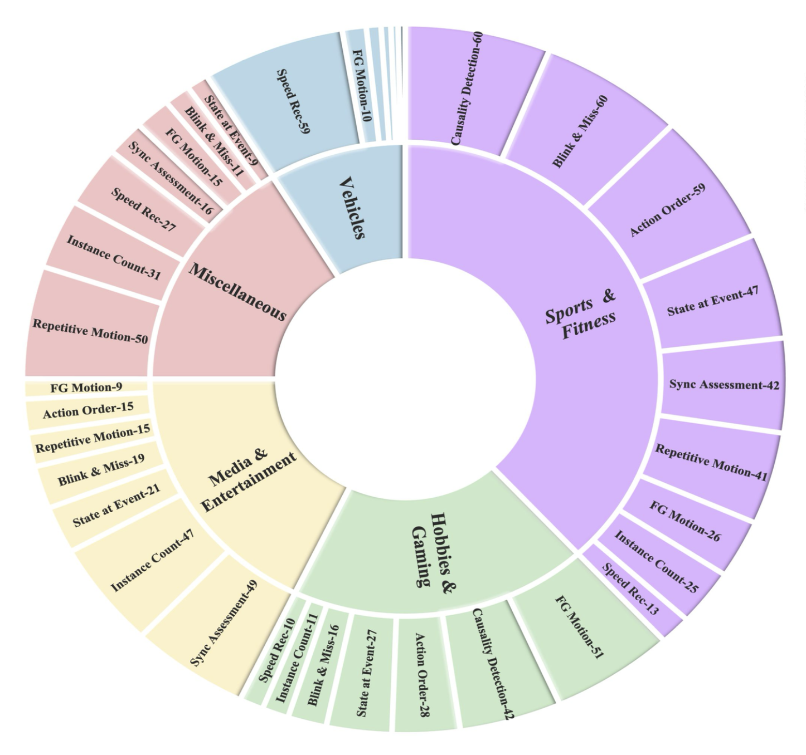

I'm a first-year MSR student at Carnegie Mellon University, where I work on 3D/4D reconstruction from video and hand-object interaction, advised by Prof. Laszlo A. Jeni.
I have been lucky to work with some wonderful researchers along the way. Before CMU, I spent two years at Samsung R&D Institute India as a Research Engineer, building multilingual safety filters and on-device vision-language models that shipped to flagship devices. During my undergrad, I worked at the Vision and AI Lab, IISc Bangalore with Prof. R. Venkatesh Babu and Varun Jampani on long-tailed image generation with StyleGANs — work that was published at CVPR 2023. I also collaborated with Prof. Poonam Goyal and Prof. Navneet Goyal at BITS Pilani's ADAPT Lab on a generalized multimodal approach for early crop yield prediction, published at IEEE Big Data 2022.
I graduated with a dual degree in Computer Science & Economics from BITS Pilani.
My research interests span multimodal learning, embodied AI, and generative modeling — particularly video-based 3D/4D understanding, hand-object interaction, embodied multimodal agents, and safe deployment of vision-language-action systems.
I am fascinated by how humans integrate multiple sensory signals — sight, sound, language — to understand and interact with the world, and I aim to replicate this in artificial systems.
🤖
Embodied Multimodal ReasoningVision-language-action models for agents that reason and act in physical environments.
🎥
3D/4D Understanding from VideoReconstructing dynamic scenes, hands, objects, and interactions over time.
🛡️
Safe, Deployable AIRobust multilingual safety filters and compact on-device models for real-world systems.
I am open to new research directions — feel free to reach out!
Publications

CVPR 2026 FPSBench: A Benchmark for Video Understanding at High Frame Rates
R. Choudhury, J.S. Dandurand, K. Qiu, K.M. Bhat, Kartik Sharma, L. Dahiya, Y. Zhao, S. Kundu, C.H. Lin, K. Kitani, L.A. Jeni IEEE/CVF Conference on Computer Vision and Pattern Recognition (CVPR), 2026
A large-scale video QA benchmark to evaluate VLMs at high frame rates, introducing the minFPS metric.
CVPR 2023 NoisyTwins: Class-Consistent and Diverse Image Generation through StyleGANs
H. Rangwani, L. Bansal, Kartik Sharma, T. Karmali, V. Jampani, R. Venkatesh Babu IEEE/CVF Conference on Computer Vision and Pattern Recognition (CVPR), 2023
IEEE Big Data 2022 A Generalized Multimodal Deep Learning Model for Early Crop Yield Prediction
A. Kaur, P. Goyal, Kartik Sharma, L. Sharma, N. Goyal IEEE International Conference on Big Data, 2022
Research Engineer— Samsung R&D Institute IndiaNov 2023 – May 2025
Built and deployed compact safety and grounding models for multilingual LLM/LVM systems on flagship devices. Achieved 95% accuracy across 12+ locales with 45% smaller models. Improved cross-lingual image grounding for better object localization in low-resource languages.
Data Scientist— PrivateBlokFeb 2023 – Nov 2023
Built PrivateBlok's MVP: a GPT-3.5-powered financial QA chatbot for 10K+ companies. Enhanced retrieval accuracy with a custom re-ranking algorithm and created a temporal knowledge graph for detailed financial insights.
Project Assistant— Video Analytics Lab, IISc BangaloreAug 2022 – Jan 2023
Improved long-tailed image generation using StyleGANs, achieving 19% better FID scores. Published work at CVPR 2023, setting a new state-of-the-art for long-tailed datasets.
CMU 16-831 · Spring 2026 RL for Articulated Object Manipulation in ManiSkill3 Kartik Sharma, Kshitiz, Soumojit Bhattacharya
Benchmarked PPO, SAC, and Model-Based RL for the OpenCabinetDrawer-v1 task. Proposed three modifications: ICM+PPO (70.1% success), Demonstration-Augmented SAC (63.3%), and BC warm-start + RL fine-tuning (58.0%).
CMU 10-799 · Spring 2026 Diffusion & Flow Matching Kartik Sharma
PyTorch implementation of DDPM, DDIM, Flow Matching, and Flow Map Matching for image generation on CelebA-64. Features Dual-Time U-Net, diagonal-annealed time-pair sampling, and JVP-based Lagrangian PDE loss via torch.func.
{kind=link}